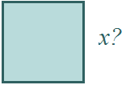
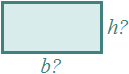

Problema 1

Si el perímetro de un cuadrado es 24cm, ¿cuánto miden sus lados?
Problema 2
Una cuerda de 180m se corta en 3 trozos: trozo A, trozo B y trozo C. Calcular cuánto miden los trozos sabiendo que el trozo B y el trozo C miden el doble y el triple que el trozo A, respectivamente.
Problema 3

Se tiene un rectángulo cuya base mide el doble que la altura. Calcular la base y la altura sabiendo que el perímetro es igual a 42m.
Problema 4
Se tiene un rectángulo cuya base mide 5 unidades más que la altura. Calcular la altura y la base del rectángulo sabiendo que su perímetro es 54 m.